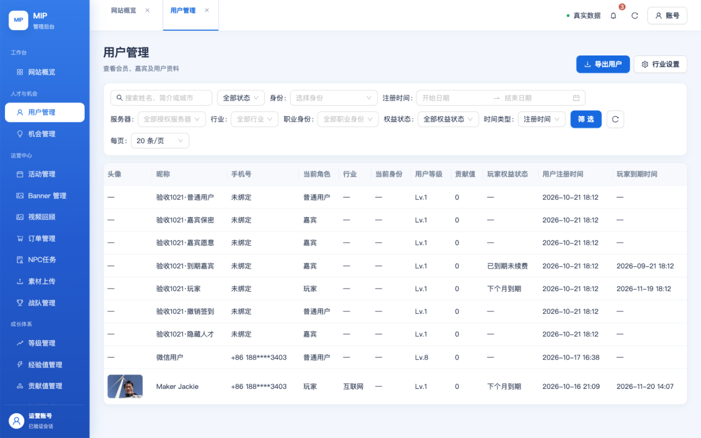
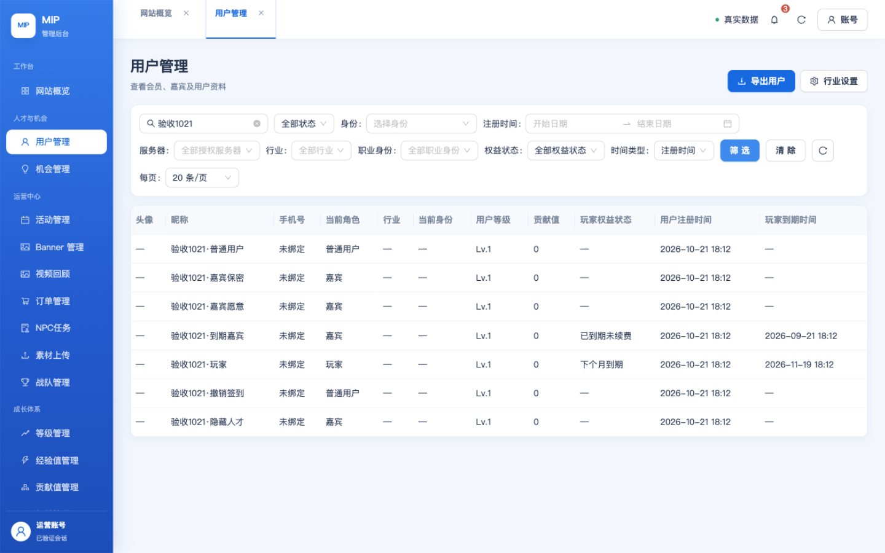
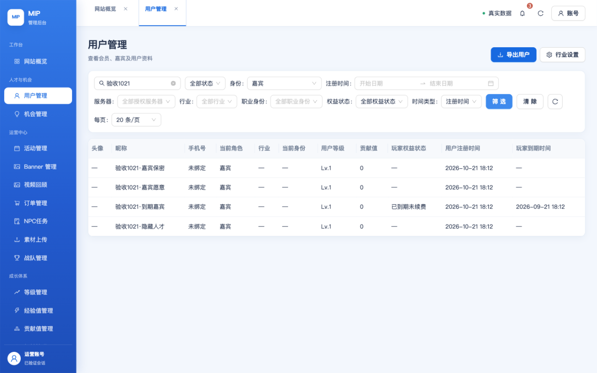
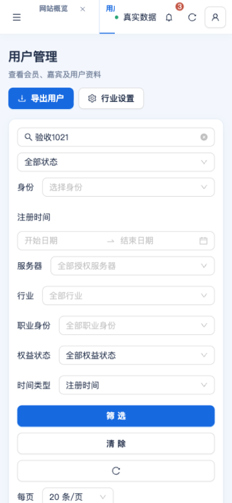
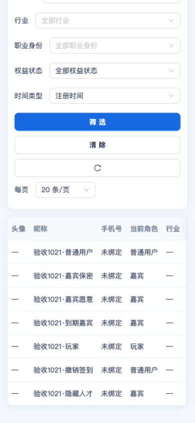
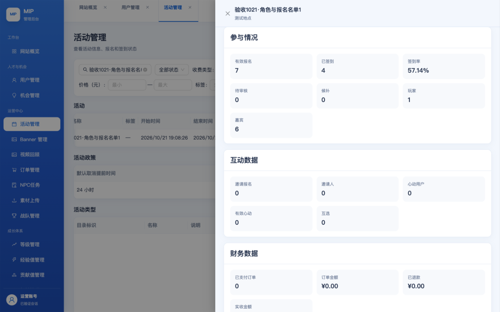
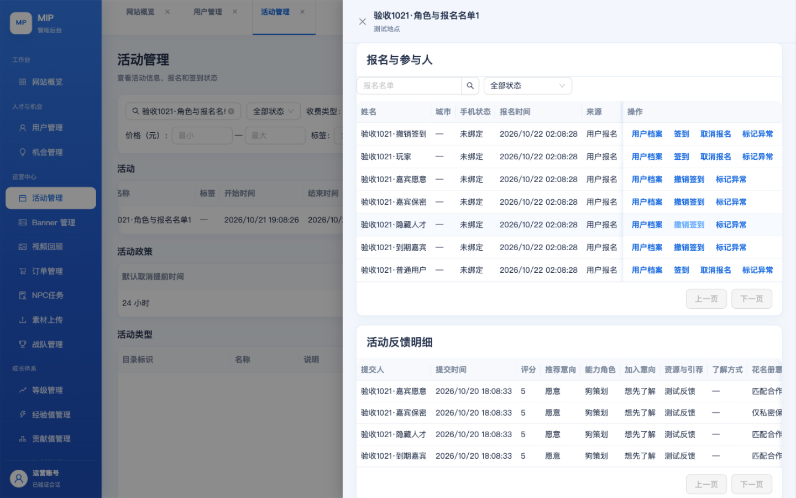

| 需求 | 结论与关键证据 |
|---|---|
| R1 后台用户管理正确显示四种角色 匿名访客（未登录）/ 普通用户 / 嘉宾 / 玩家 |
通过 服务端 SQL 分页前推导 kind（NORMAL/GUEST/PLAYER）；真实测试库 7 名合成样本逐一与规则一致；users.list / users.get / 三种 kind 筛选 / 旧版 identity=NORMAL 兼容全部通过（13 项 API 检查 + 4 张实拍）。匿名访客不落库，后台列表无 ANONYMOUS 伪用户，符合澄清口径（Q-ADMIN-09）。 |
| R2 报名成功未签到的普通用户进入活动参与人嘉宾列表 | 通过 服务端口径 status IN ('REGISTERED','ATTENDED') AND share_profile=1，userKind 仅按有效玩家权益划分；真实库「普通用户」（已报名、从未签到）与「撤销签到」（签到已撤销）均落在嘉宾页签，活动后台参与情况显示 玩家 1 / 嘉宾 6（5 项检查 + 2 张实拍）。 |
| R3 登录后强制资料表单：除性别外全部必填 | 通过（服务端/表单层） 服务端五字段判定：昵称、头像(READY 资产)、代表行业(PRIMARY_INDUSTRY)、当前身份、一句话介绍；profileCompleteSql 不含性别。真实库 COMPLETE/INCOMPLETE 分区与 SQL 完全一致（1/8）；WXML 五行红色 * 、性别行无星号；保存校验恰好这五项。小程序真实页面保存流待 DevTools 重新登录后补测（见第六节）。 |
| R4 人才合作列表只显示嘉宾（最新花名册选择=愿意）和玩家 | 通过 服务端谓词 有效玩家 OR (已签到嘉宾 AND 最新反馈 rosterConsent='MATCH_OPPORTUNITIES')，按 updated_at 取跨活动最新选择、隐私开关与屏蔽保留；真实库推导合格恰为 3 人：嘉宾愿意、到期嘉宾、玩家；嘉宾保密（最新=仅私密保存）、隐藏人才（talentSearch=false）、撤销签到/普通用户（非嘉宾非玩家）被排除（4 项检查）。 |
git pull --rebase 已执行，HEAD = f97398cb；本地领先 origin/main 仅 1 个 docs 提交（上一轮 E2E 文档的 rebase 版本），四需求相关代码与 origin/main 83a56f69 完全一致；工作区仅本批证据目录未提交。6a5ec139（feat: align user roles, profile requirements and roster consent），含迁移 113_roster_consent_lookup.sql。991796d7 以来 git diff 对 cloudfunctions/、admin-web/、packages/admin-contracts/、database/、src/packages/member/mip-profile/ 均为空；SCF 回读 5 个相关测试函数均 Active、ModTime 2026-10-21 18:16–18:18（上一轮部署窗口）后再无重部署 → 本轮测试到的服务端代码即 HEAD 代码。mip_test 通过仓库只读通道（CloudBase MCP runQuery，SELECT-only 断言）访问；生产未做任何读写。| 云函数（TEST） | 状态 | ModTime（本地时间） | CodeSize |
|---|---|---|---|
| mip-t-admin-api | Active | 2026-10-21 18:17:01 | 0 |
| mip-t-admin-web-api | Active | 2026-10-21 18:18:35 | 0 |
| mip-t-events-api | Active | 2026-10-21 18:16:45 | 0 |
| mip-t-identity-api | Active | 2026-10-21 18:16:39 | 0 |
| mip-t-opportunities-api | Active | 2026-10-21 18:16:50 | 0 |
用与云函数逐字相同的 SQL 片段（product-role.js / profile-readiness.js / cooperation.js eligibleTalent）在真实库上推导；「人才合格」= 有效玩家 OR（已签到嘉宾 且 最新花名册选择=愿意）且未隐藏。
| 样本 | 当前角色 | 有效玩家权益 | 有效签到 | 最新花名册选择（跨活动） | 人才搜索可见 | 人才合作应显示 | 资料完整 | 性别 |
|---|---|---|---|---|---|---|---|---|
| 到期嘉宾 | 嘉宾 | 否 | 是 | 匹配合作机会（愿意） | 是 | 是 | 否 | null（选填） |
| 嘉宾保密 | 嘉宾 | 否 | 是 | 仅私密保存（不愿意） | 是 | 否 | 否 | null（选填） |
| 嘉宾愿意 | 嘉宾 | 否 | 是 | 匹配合作机会（愿意） | 是 | 是 | 否 | null（选填） |
| 撤销签到 | 普通用户 | 否 | 否 | — | 是 | 否 | 否 | null（选填） |
| 普通用户 | 普通用户 | 否 | 否 | — | 是 | 否 | 否 | null（选填） |
| 玩家 | 玩家 | 是 | 否 | — | 是 | 是 | 否 | null（选填） |
| 隐藏人才 | 嘉宾 | 否 | 是 | 匹配合作机会（愿意） | 否 | 否 | 否 | null（选填） |
| 样本 | 报名状态 | 有效签到 | 签到撤销 | 参与人列表应归入 |
|---|---|---|---|---|
| 到期嘉宾 | 已签到 | 是 | — | 嘉宾 |
| 嘉宾保密 | 已签到 | 是 | — | 嘉宾 |
| 嘉宾愿意 | 已签到 | 是 | — | 嘉宾 |
| 撤销签到 | 已报名 | 否 | 签到已撤销 | 嘉宾 |
| 普通用户 | 已报名 | 否 | — | 嘉宾 |
| 玩家 | 已报名 | 否 | — | 玩家 |
| 隐藏人才 | 已签到 | 是 | — | 嘉宾 |
消费者端公开参与人口径（mip-events-api listPublicParticipants）：分享档案 + REGISTERED/ATTENDED + 用户有效 + 有档案；不要求签到。「普通用户」（已报名未签到）与「撤销签到」归入嘉宾页签，玩家单独页签 → 预期 玩家 1 / 嘉宾 6，与后台「参与情况」实拍一致。
| 提交人 | rosterConsent |
|---|---|
| 嘉宾愿意 | 匹配合作机会（愿意） |
| 嘉宾保密 | 仅私密保存（不愿意） |
| 到期嘉宾 | 匹配合作机会（愿意） |
| 隐藏人才 | 匹配合作机会（愿意） |
通道：HTTPS 密码登录 https://test.admin.mip.cool → /api/admin 只读查询 action（WEB_ADMIN_QUERY_ACTIONS 白名单断言，零写入）；期望值全部来自第三节的真实库推导，不做同义反复。
| 检查 | 需求 | 结果 | 证据摘要 |
|---|---|---|---|
| auth:password-login | G | PASS | HTTP 200 |
| auth:admin-enabled | G | PASS | enabled=true |
| R1-API-01 users.list returns kind for every row | R1 | PASS | 7 rows, kinds=["NORMAL","GUEST","PLAYER"] |
| R1-API-02 all 7 fixture users present and kind matches DB-derived role | R1 | PASS | 普通用户=NORMAL, 嘉宾保密=GUEST, 嘉宾愿意=GUEST, 到期嘉宾=GUEST, 玩家=PLAYER, 撤销签到=NORMAL, 隐藏人才=GUEST |
| R1-API-03 no ANONYMOUS label in backend list (anonymous is session-only, never a user row) | R1 | PASS | ANONYMOUS absent |
| R1-API-04 filters.kind=NORMAL returns exactly the DB-derived NORMAL fixtures (server-side filter before pagination) | R1 | PASS | expected 2, got 2: 撤销签到,普通用户 |
| R1-API-04 filters.kind=GUEST returns exactly the DB-derived GUEST fixtures (server-side filter before pagination) | R1 | PASS | expected 4, got 4: 到期嘉宾,嘉宾保密,嘉宾愿意,隐藏人才 |
| R1-API-04 filters.kind=PLAYER returns exactly the DB-derived PLAYER fixtures (server-side filter before pagination) | R1 | PASS | expected 1, got 1: 玩家 |
| R1-API-05 NORMAL ∪ GUEST ∪ PLAYER partition the fixture set (no overlap, no omission) | R1 | PASS | union=7, all=7 |
| R1-API-06 users.get 嘉宾愿意 detail kind | R1 | PASS | kind=GUEST expected=GUEST |
| R1-API-06 users.get 普通用户 detail kind | R1 | PASS | kind=NORMAL expected=NORMAL |
| R1-API-06 users.get 玩家 detail kind | R1 | PASS | kind=PLAYER expected=PLAYER |
| R1-API-06 users.get 撤销签到 detail kind | R1 | PASS | kind=NORMAL expected=NORMAL |
| R1-API-07 legacy filters.identity=NORMAL is translated to kind=NORMAL by BFF | R1 | PASS | 撤销签到,普通用户 |
| R3-API-01 profileComplete=INCOMPLETE lists the fixtures lacking avatar/industry (5-field rule, gender ignored) | R3 | PASS | 7 incomplete fixtures (all have nickname/career/headline but no READY avatar + no PRIMARY_INDUSTRY) |
| R3-API-02 profileComplete=COMPLETE excludes every incomplete fixture | R3 | PASS | 0 complete fixtures |
| R3-API-03 whole-DB COMPLETE/INCOMPLETE partition matches SQL (1 complete, 8 incomplete active users) | R3 | PASS | COMPLETE=1, INCOMPLETE=8 |
| R2-API-01 events.list finds fixture event 名单1 | R2 | PASS | 3 fixture events, target found=true |
| R2-API-02 roster lists all 7 fixture registrations | R2 | PASS | 撤销签到:REGISTERED, 玩家:REGISTERED, 嘉宾愿意:ATTENDED✓, 嘉宾保密:ATTENDED✓, 隐藏人才:ATTENDED✓, 到期嘉宾:ATTENDED✓, 普通用户:REGISTERED |
| R2-API-03 普通用户 is REGISTERED with no check-in (and still a NORMAL role globally) | R2 | PASS | registrationStatus=REGISTERED, checkedInAt=null, globalRole=NORMAL |
| R2-API-04 roster registrationStatus/check-in match DB for every fixture row | R2 | PASS | status + checkedInAt consistent with mip_event_registrations/mip_event_checkins |
| R2-DB-01 consumer participants predicate (REGISTERED|ATTENDED, share_profile=1) yields GUEST=6 incl. 普通用户 & 撤销签到, PLAYER=1 | R2 | PASS | GUEST=6, PLAYER=1, registered-not-checked-in=撤销签到,普通用户,玩家 |
| R4-API-01 feedbacks.list exposes rosterConsent per fixture and matches DB | R4 | PASS | 嘉宾愿意=MATCH_OPPORTUNITIES (label: 匹配合作机会), 嘉宾保密=PRIVATE (label: 仅私密保存), 到期嘉宾=MATCH_OPPORTUNITIES (label: 匹配合作机会), 隐藏人才=MATCH_OPPORTUNITIES (label: 匹配合作机会) |
| R4-DB-01 eligibleTalent predicate on real DB → exactly 嘉宾愿意 + 到期嘉宾 + 玩家 (3); PRIVATE / hidden / revoked / ordinary excluded | R4 | PASS | 到期嘉宾, 嘉宾愿意, 玩家 |
| R4-DB-02 嘉宾保密 latest consent PRIVATE across both events → not a talent even though GUEST | R4 | PASS | GUEST + PRIVATE ⇒ excluded |
| R4-DB-03 玩家 is a talent without any feedback (active entitlement alone qualifies) | R4 | PASS | PLAYER + no feedback ⇒ included |
原始请求/响应记录：.tmp/e2e-20261022/out/admin-live.json（凭据与 Cookie 不落盘，用户 ID 仅以哈希出现）。
| 套件 | 方式 | 结果 | 失败 | 与四需求直接相关的代表用例 |
|---|---|---|---|---|
| mip-identity-api | node --test | 111 | 0 | product-role 四角色映射 / profile-readiness 五项必填且性别不参与 / 跨 bundle 规则副本一致 |
| mip-admin-api | node --test | 787 | 0 | users.list 服务端 kind 过滤与投影 / profileComplete 过滤 / 用户详情 kind |
| mip-events-api | node --test | 194 通过 + 1 跳过* | 0 | 公开参与人口径（REGISTERED|ATTENDED）计数子查询对齐 / 玩家·嘉宾识别 |
| mip-opportunities-api | node --test | 167 | 0 | 人才资格（有效玩家或已签到+最新愿意）分页前过滤 / 冻结快照游标 |
| admin-web 合同 | node --test | 339 | 0 | kind=GUEST 转发 / legacy identity=NORMAL 兼容 / 三角色序列化投影 |
| admin-web React | vitest（verify:all） | 262 | 0 | 用户列表页面合同 / 角色标签渲染 |
| 小程序 profile/opportunities | vitest | 16 | 0 | 五项必填、性别选填保存校验 / 行业保留 / 机会页人才列表合同 |
src/packages/member/mip-profile/index.wxml：头像/昵称/代表行业/当前身份状态/一句话介绍 5 行各含 text-danger *；性别行无星号（L121-L172）。src/packages/member/mip-profile/save-intent.ts：profileSaveValidationMessage 恰好校验 5 项，接口不含性别字段。missingProfileFields 返回 NICKNAME/AVATAR/PRIMARY_INDUSTRY/CAREER_IDENTITY/HEADLINE，缺任一保存被拒（identity 单测覆盖 PROFILE_REQUIRED 语义）。






pnpm verify:all（小程序 16 步 + admin-web lint/typecheck/test/build/responsive）：通过，退出码 0；vitest 汇总 290 个测试文件通过。git diff --check：存在未提交证据文件（本批报告目录），无冲突标记。pnpm build/verify:build 内置检查通过。fixture-matrix.json / event-matrix.json / admin-live.json / function-source.json（保存在会话 .tmp，报告提交时摘要入档）。报告生成时间 2026-10-21T18:21:32.821Z · HEAD f97398cb59408c836aa1f615060cd84eb43f39e5